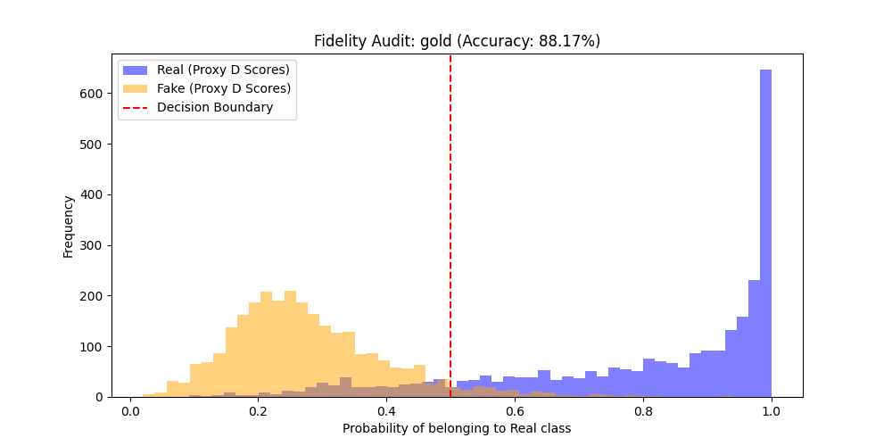
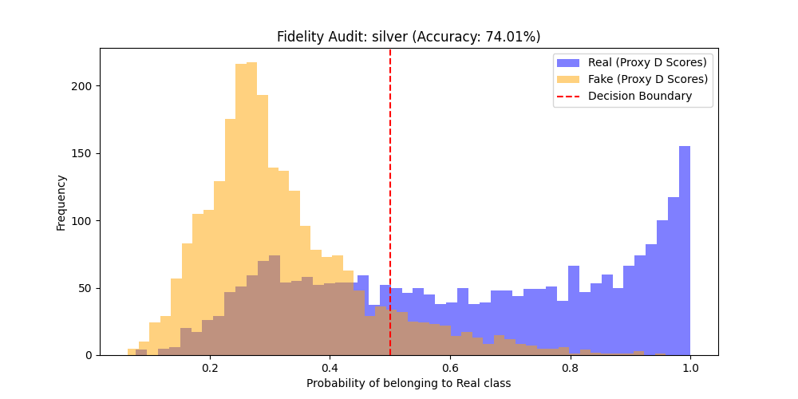
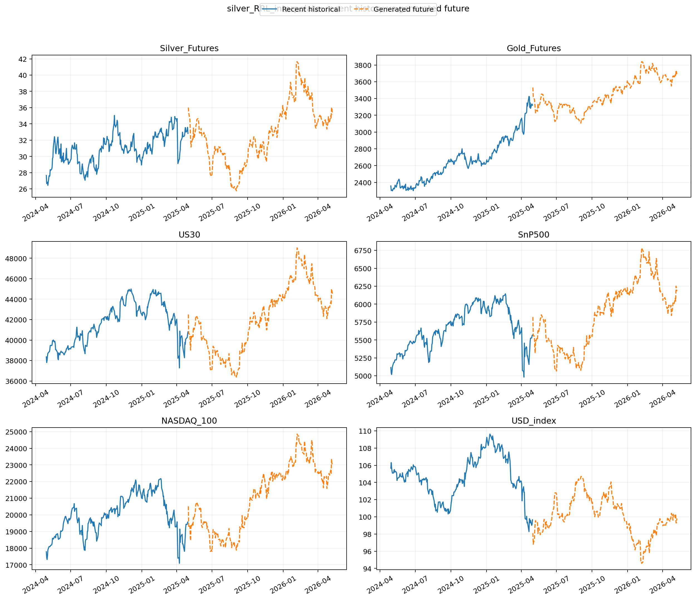

Stationary Returns Synthesis Performance for Gold and Silver Markets
| Avg Volatility Ratio | 0.9844 |
| Avg KS Statistic | 0.0907 |
| Auditor Accuracy | 88.17% |
| Avg Volatility Ratio | 1.0019 |
| Avg KS Statistic | 0.0748 |
| Auditor Accuracy | 74.01% |
The Silver model demonstrates exceptional fidelity, with an independent proxy auditor reaching only 74% accuracy in distinguishing synthetic paths from historical reality.
Addresses the preservation of temporal dynamics by combining unsupervised adversarial training with supervised joint-optimization.
Yoon, J., et al. (2019). NeurIPS.Separates metadata from time series features to improve long-sequence stability and cross-asset correlation.
Lin, Z., et al. (2020). ACM CoNEXT.Uses Temporal Convolutional Networks (TCNs) to replicate financial stylized facts like volatility clustering.
Wiese, M., et al. (2020). Quantitative Finance.Introduces signature-based metrics (Sig-W1) as a universal distance measure for high-dimensional paths.
Ni, H., et al. (2020). arXiv.An independent LSTM auditor was trained to distinguish between historical sequences and generated artifacts. Overlapping score distributions represent high fidelity.

Figure 4.1: Gold Fidelity Audit (88.1% Accuracy)

Figure 4.2: Silver Fidelity Audit (74.0% Accuracy)
The continuity plots verify the seamless temporal transition between historical lookback windows and the synthesized forecast bridge.

Figure 5.1: Silver Temporal Bridging Analysis